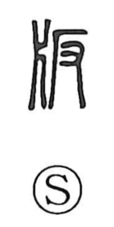

版

Uncategorized
Kun: | On: han
printing block ・ edition ・ plate
Explanation
Shirakawa sees 版 as a phono-semantic character: 反 provides the phonetic cue for the on reading han, while 片 depicts a board—the plank set on either side in the tamped-earth wall-building technique called hanchiku (版築). Archaeological remains at Zhengzhou, a Zhou-period capital, preserve a long stretch of such rammed-earth fortification, vividly recalling the paired boards that framed the fill. From this concrete implement arose the sense of “board,” and by extension the “printing block” or “plate.” In early usage, 版 and 板 were probably the same graph and were often used interchangeably for “board,” “placard,” and “printing block.”